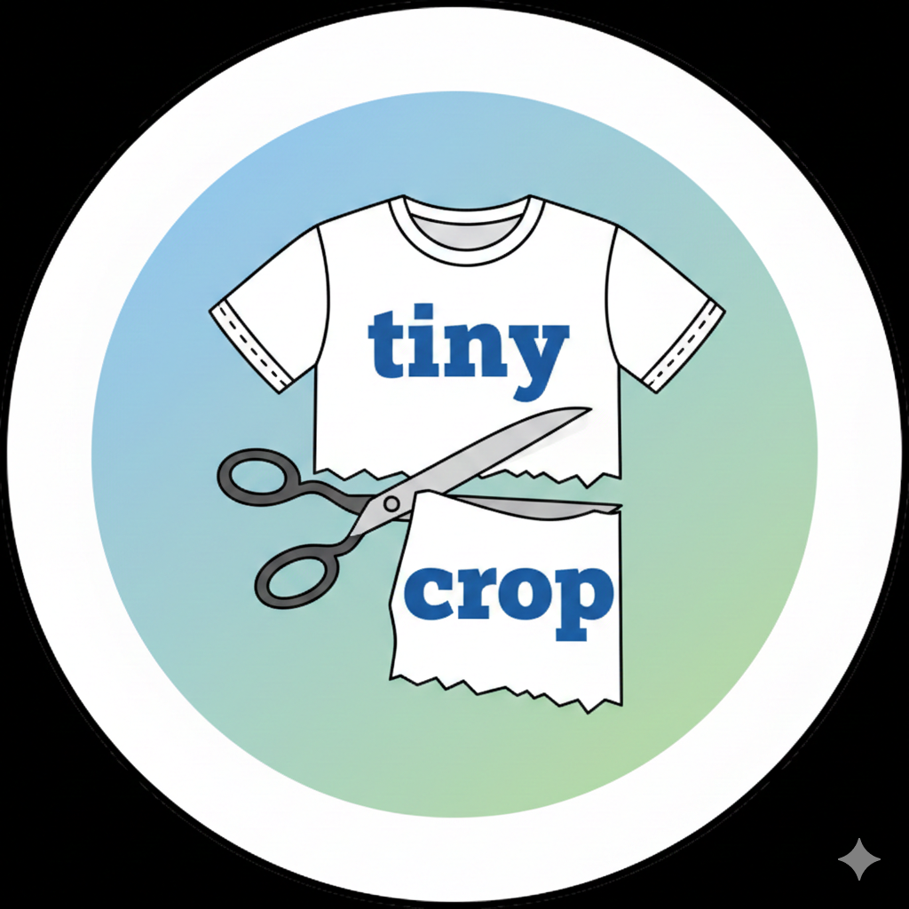

Tiny-cropSelecciona fragmentos específicos de documentos PDF para su posterior análisis con grandes modelos de lenguaje (LLMs). Tiny-crop elimina el resto de manera local y segura.
📁 Arrastra tus archivos PDF aquí o haz clic. Cuando finalices presiona "Iniciar Anonimización".